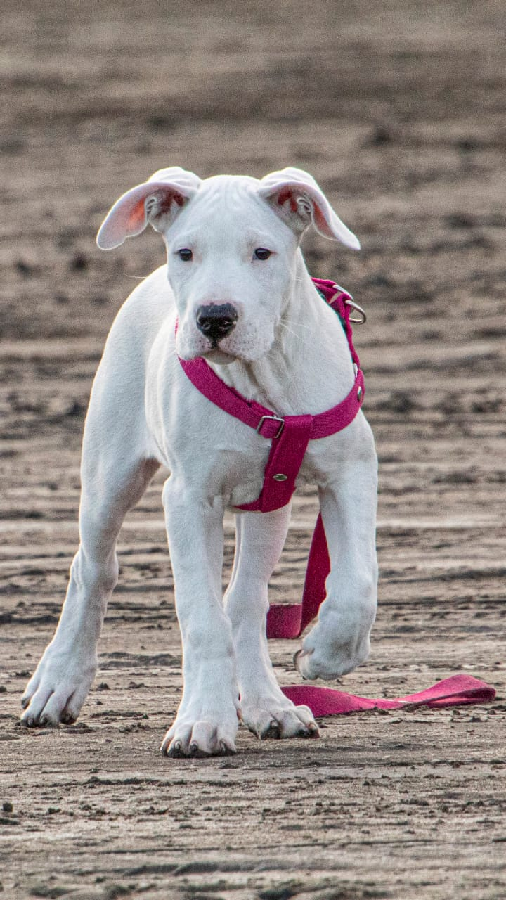

El Dogo Argentino
El origen del dogo argentino se remonta a la época de la colonización en Argentina, cuando diversas razas como bulldogs, bull terriers, dogos españoles y alanos fueron introducidas en el país. La raza desciende del antiguo perro cordobés, ya extinto, y surgió a través de cruces entre estas distintas razas. Durante los tiempos en que las peleas de perros eran consideradas un deporte tradicional en Argentina, especialmente en la zona de Córdoba, algunos criadores se destacaron en la cría de estos canes. Aunque estas prácticas fueron posteriormente prohibidas, la familia cordobesa Nores Martínez persistió en mantener y seleccionar sus perros, centrando sus esfuerzos en desarrollar un animal resistente y versátil, capaz tanto de la caza mayor como de la protección del hogar. A través de meticulosos cruces con razas como el bóxer, dogos de Burdeos y bulldogs, la familia logró crear al dogo argentino, un perro poderoso y leal que destacó por su valentía y habilidades en diversas tareas. Este proceso de selección rigurosa y dedicación resultó en la creación de una raza única y distintiva, que ha ganado reconocimiento a nivel internacional por su carácter noble y su versatilidad en múltiples roles.
Alma - 4 meses
El dogo argentino es una raza canina relativamente nueva que desciende del ya extinto perro cordobés. Es conocido por su imponente apariencia física, con una estructura muscular robusta y una elegante capa de pelaje blanco. Este noble animal destaca por su mirada alerta y su expresión serena, que refleja su inteligencia y determinación. Además de su imponente apariencia física, el dogo argentino se distingue por su agilidad y su temperamento equilibrado. Es un perro atlético y vigoroso, capaz de desempeñarse con eficacia en diversas actividades, desde la caza hasta la protección del hogar. Su naturaleza obediente y leal lo convierte en un compañero confiable tanto en el campo como en la ciudad.
Características:
Apariencia:
El dogo argentino es un perro grande y musculoso, con un pelaje blanco y corto. Pueden tener una mancha negra alrededor de un ojo, pero idealmente son blancos.Temperamento:
Son perros leales, afectuosos y protectores con su familia. Pueden ser reservados con extraños y otros animales, mostrando desconfianza.Habilidades:
Fueron criados para la caza mayor y son excelentes guardianes. Tienen un fuerte instinto de presa y necesitan ejercicio regular.Cuidados:
Requieren entrenamiento firme y constante desde cachorros. Necesitan espacio para correr y socialización temprana para evitar problemas de comportamiento.Video de Alma
En resumen:
El dogo argentino es una raza poderosa y leal que puede ser una excelente mascota para personas con experiencia y dedicación. Su entrenamiento, socialización y ejercicio adecuados son clave para asegurar una convivencia armoniosa.
Para buscar mas informacion sobre cuidados Visitar este sitio